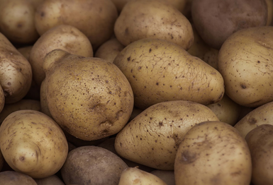

Vad är chips?
Chips är tunna skivor av potatis som har friterats eller tillagats i en ugn. De är ofta krispiga och några olika smaker är salt, grill och sourcream and onion.

Chips är tunna skivor av potatis som har friterats eller tillagats i en ugn. De är ofta krispiga och några olika smaker är salt, grill och sourcream and onion.
